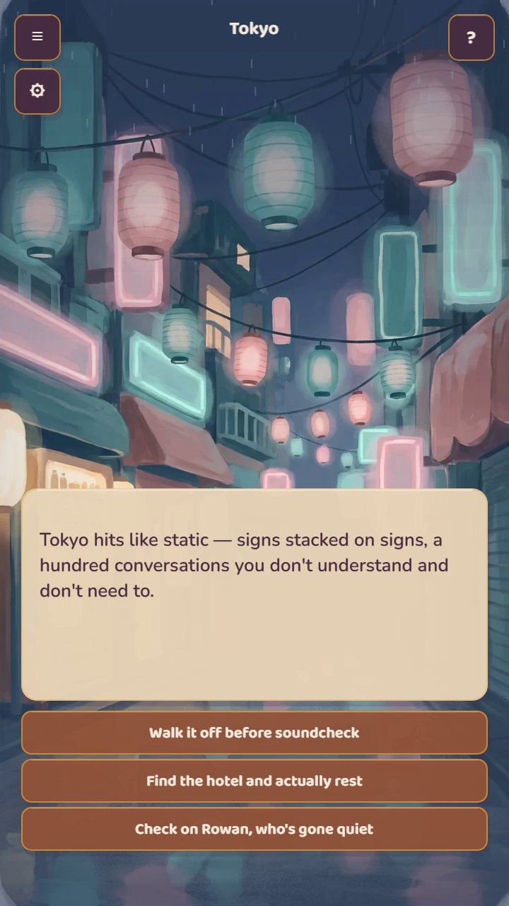
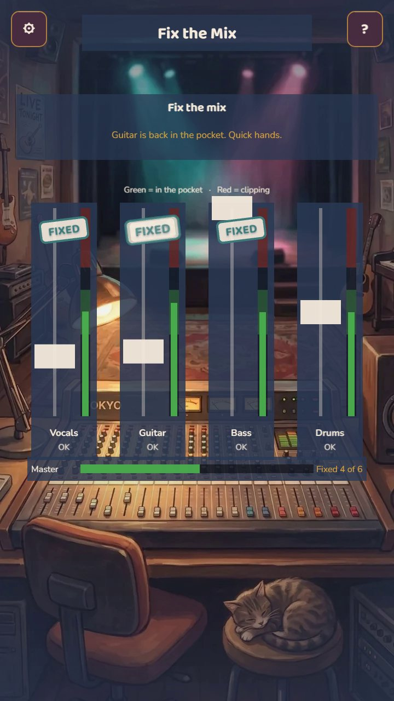
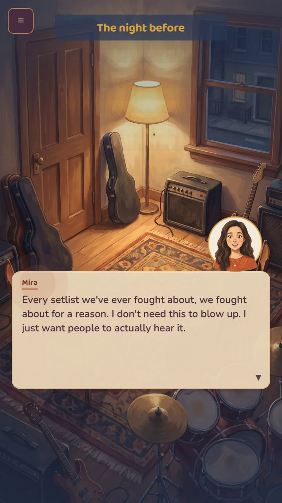
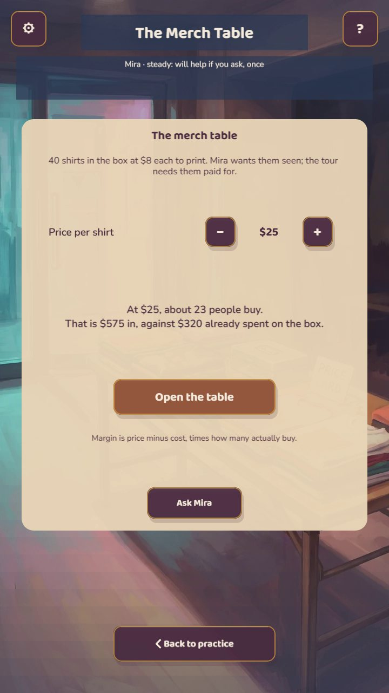
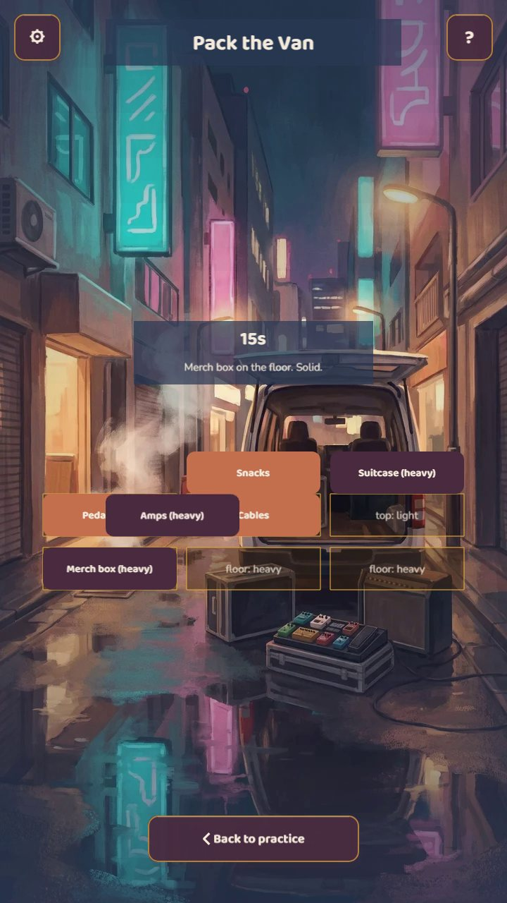
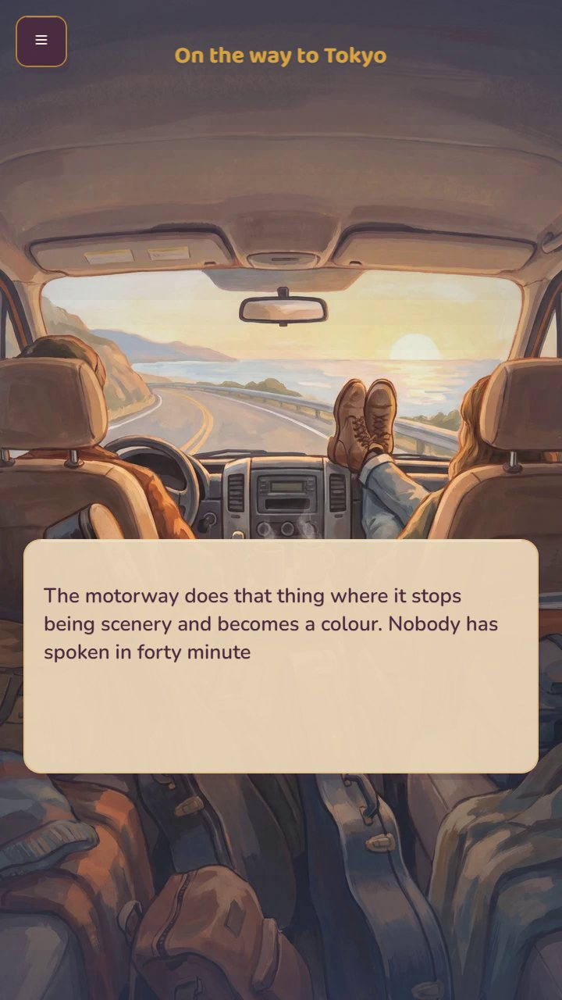
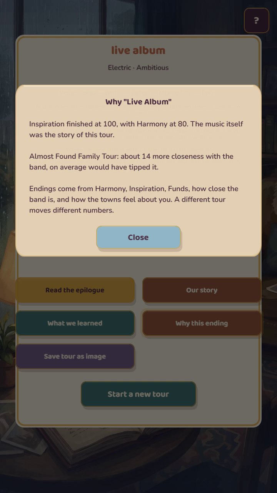

About the game
Tour Life takes Mira, Theo, Jun and Rowan through Lisbon, Tokyo, Mexico City and Berlin. Each city is a day of exploring, talking and small jobs that keep a band going, ending in a show you play on four lanes.
Between shows, the jobs teach real skills. Set levels at soundcheck without clipping, ride a fader until a channel sits in the pocket, load the heavy cases first, price the merch table, take the guaranteed fee or bet on the door, and order a setlist around the circle of fifths. Every answer, right or wrong, tells you why.
Your choices decide who you grow close to, and closeness changes how your bandmates play with you. The tour ends in a Scrapbook that remembers what happened and what you learned, and you can save it as an image.
What's inside
- A story-driven rhythm game with no fail state
- 8 original songs on four lanes, with hold notes
- 34 minigames across 19 kinds of play
- 4 bandmates who help, react and remember
- Music skills: intervals, chords, transposing, tempo, mixing, the circle of fifths
- Money skills: door deals, pricing, budgets, gear, exchange rates
- 6 endings, seeded routes and a shared daily tour
Screenshots















Download press kit (zip, 2.4 MB)12 screenshots at 720×1280, logo, social image.
Play it your way
Tap the lanes and buttons on any phone, held upright.
D F J K play the show. Arrows move, Enter taps (hold it with arrows to drag), Space advances dialogue, Esc pauses.
D-pad or left stick moves, A taps, B goes back.
Also built in: relaxed timing, autoplay for the shows, audio latency calibration, reduced motion, screen reader support for every button, and offline play once loaded.
Fact sheet
- Developer
- Bennett AI Solutions Inc. (Kentucky, USA)
- Publisher
- Self-published
- Platform
- Web: desktop and mobile browsers
- Release
- Live now, free
- Price
- Free. No ads, no in-app purchases, no accounts.
- Genre
- Rhythm, narrative, management
- Language
- English
- Tech
- TypeScript, Phaser 3, no third-party SDKs
- Play
- this site
- Contact
- jb@bennettaisolutions.tech
How it's made
Tour Life is made by a solo founder-director using an AI-assisted pipeline. Code, writing, art and music were produced with AI tools under the founder's direction, and every build goes through human playtesting, including four rounds of paid external QA.
With publishing support, final art and audio would be remade by hired artists and composers.